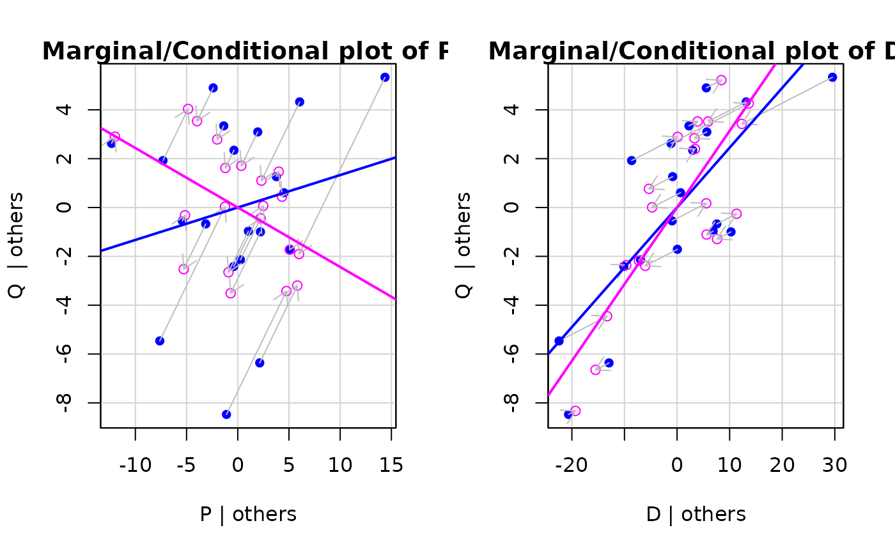
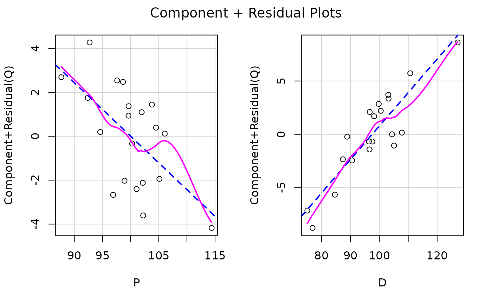
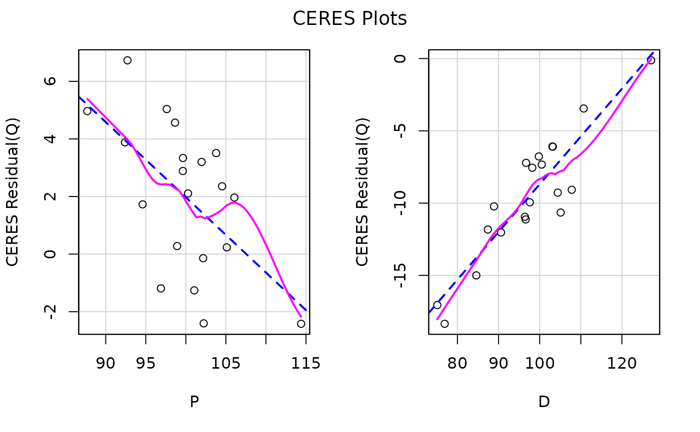
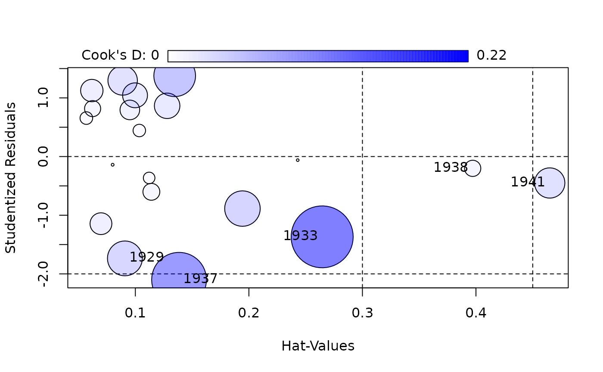
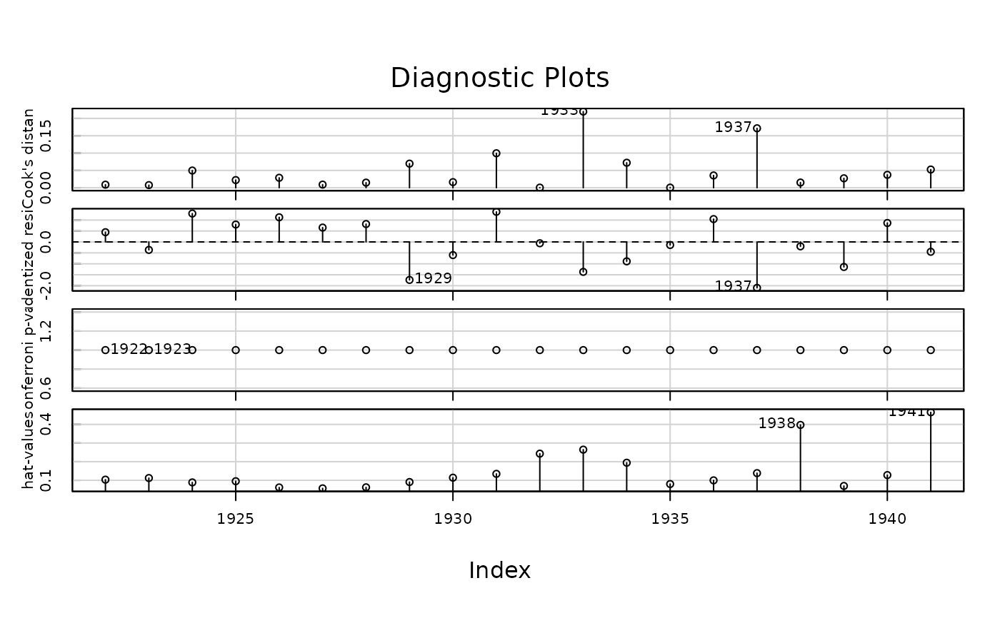
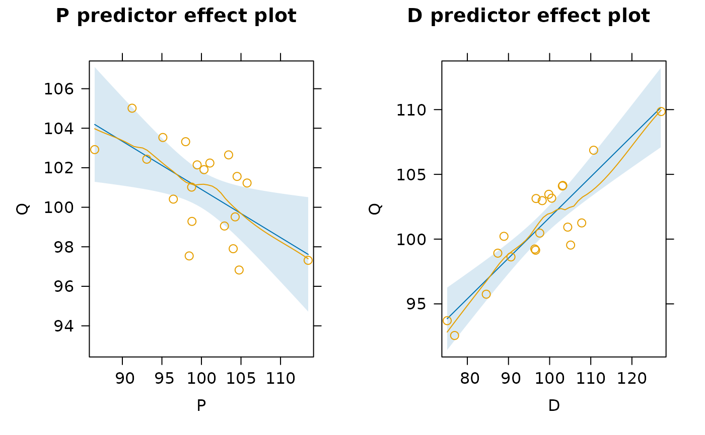

Deletion and Other Diagnostic Methods for "ivreg" Objects
Source: R/ivregDiagnostics.R
ivregDiagnostics.RdMethods for computing deletion and other regression diagnostics for 2SLS regression.
It's generally more efficient to compute the deletion diagnostics via the influence
method and then to extract the various specific diagnostics with the methods for
"influence.ivreg" objects. Other diagnostics for linear models, such as
added-variable plots (avPlots) and component-plus-residual
plots (crPlots), also work, as do effect plots
(e.g., predictorEffects) with residuals (see the examples below).
The pointwise confidence envelope for the qqPlot method assumes an independent random sample
from the t distribution with degrees of freedom equal to the residual degrees of
freedom for the model and so are approximate, because the studentized residuals aren't
independent.
For additional information, see the vignette Diagnostics for 2SLS Regression.
# S3 method for ivreg influence( model, sigma. = n <= 1000, type = c("stage2", "both", "maximum"), applyfun = NULL, ncores = NULL, ... ) # S3 method for ivreg rstudent(model, ...) # S3 method for ivreg cooks.distance(model, ...) # S3 method for influence.ivreg dfbeta(model, ...) # S3 method for ivreg dfbeta(model, ...) # S3 method for ivreg hatvalues(model, type = c("stage2", "both", "maximum"), ...) # S3 method for influence.ivreg rstudent(model, ...) # S3 method for influence.ivreg hatvalues(model, ...) # S3 method for influence.ivreg cooks.distance(model, ...) # S3 method for influence.ivreg qqPlot( x, ylab = paste("Studentized Residuals(", deparse(substitute(x)), ")", sep = ""), distribution = c("t", "norm"), ... ) # S3 method for ivreg influencePlot(x, ...) # S3 method for influence.ivreg influencePlot(model, ...) # S3 method for ivreg infIndexPlot(model, ...) # S3 method for influence.ivreg infIndexPlot(model, ...) # S3 method for influence.ivreg model.matrix(object, ...) # S3 method for ivreg avPlots(model, terms, ...) # S3 method for ivreg avPlot(model, ...) # S3 method for ivreg mcPlots(model, terms, ...) # S3 method for ivreg mcPlot(model, ...) # S3 method for ivreg Boot( object, f = coef, labels = names(f(object)), R = 999, method = "case", ncores = 1, ... ) # S3 method for ivreg crPlots(model, terms, ...) # S3 method for ivreg crPlot(model, ...) # S3 method for ivreg ceresPlots(model, terms, ...) # S3 method for ivreg ceresPlot(model, ...) # S3 method for ivreg plot(x, ...) # S3 method for ivreg qqPlot(x, distribution = c("t", "norm"), ...) # S3 method for ivreg outlierTest(x, ...) # S3 method for ivreg influencePlot(x, ...) # S3 method for ivreg spreadLevelPlot(x, main = "Spread-Level Plot", ...) # S3 method for ivreg ncvTest(model, ...) # S3 method for ivreg deviance(object, ...)
Arguments
| model, x, object | A |
|---|---|
| sigma. | If |
| type | If |
| applyfun | Optional loop replacement function that should work like
|
| ncores | Numeric, number of cores to be used in parallel computations. If set
to an integer the |
| ... | arguments to be passed down. |
| ylab | The vertical axis label. |
| distribution |
|
| terms | Terms for which added-variable plots are to be constructed; the default,
if the argument isn't specified, is the |
| f, labels, R | see |
| method | only |
| main | Main title for the graph. |
Value
In the case of influence.ivreg, an object of class "influence.ivreg"
with the following components:
coefficientsthe estimated regression coefficients
modelthe model matrix
dfbetainfluence on coefficients
sigmadeleted values of the residual standard deviation
dffitsoverall influence on the regression coefficients
cookdCook's distances
hatvalueshatvalues
rstudentStudentized residuals
df.residualresidual degrees of freedom
In the case of other methods, such as rstudent.ivreg or
rstudent.influence.ivreg, the corresponding diagnostic statistics.
Many other methods (e.g., crPlot.ivreg, avPlot.ivreg, Effect.ivreg)
draw graphs.
See also
ivreg, avPlots,
crPlots, predictorEffects,
qqPlot, influencePlot,
infIndexPlot, Boot,
outlierTest, spreadLevelPlot,
ncvTest.
Examples
#> #> Call: #> ivreg(formula = Q ~ P + D | D + F + A, data = Kmenta) #> #> Residuals: #> Min 1Q Median 3Q Max #> -3.4305 -1.2432 -0.1895 1.5762 2.4920 #> #> Coefficients: #> Estimate Std. Error t value Pr(>|t|) #> (Intercept) 94.63330 7.92084 11.947 1.08e-09 *** #> P -0.24356 0.09648 -2.524 0.0218 * #> D 0.31399 0.04694 6.689 3.81e-06 *** #> #> Diagnostic tests: #> df1 df2 statistic p-value #> Weak instruments 2 16 88.025 2.32e-09 *** #> Wu-Hausman 1 16 11.422 0.00382 ** #> Sargan 1 NA 2.983 0.08414 . #> --- #> Signif. codes: 0 ‘***’ 0.001 ‘**’ 0.01 ‘*’ 0.05 ‘.’ 0.1 ‘ ’ 1 #> #> Residual standard error: 1.966 on 17 degrees of freedom #> Multiple R-Squared: 0.7548, Adjusted R-squared: 0.726 #> Wald test: 23.81 on 2 and 17 DF, p-value: 1.178e-05 #>#> StudRes Hat CookD #> 1929 -1.7359357 0.09079703 0.06956671 #> 1933 -1.3686682 0.26453459 0.21973049 #> 1937 -2.0995532 0.13849570 0.17147564 #> 1938 -0.2010944 0.39711512 0.01508349 #> 1941 -0.4505155 0.46498004 0.05257374#> 1937 1929 #> 16 8#> #> Suggested power transformation: -2.44685#> #> #> #> #> #>set.seed <- 12321 # for reproducibility confint(car::Boot(kmenta.eq1, R = 250)) # 250 reps for brevity#> Bootstrap bca confidence intervals #> #> 2.5 % 97.5 % #> (Intercept) 74.1021451 107.77780398 #> P -0.4454188 0.02161098 #> D 0.1902243 0.40024278#> No Studentized residuals with Bonferroni p < 0.05 #> Largest |rstudent|: #> rstudent unadjusted p-value Bonferroni p #> 1937 -2.099553 0.051985 NA#> Non-constant Variance Score Test #> Variance formula: ~ fitted.values #> Chisquare = 0.2390325, Df = 1, p = 0.62491